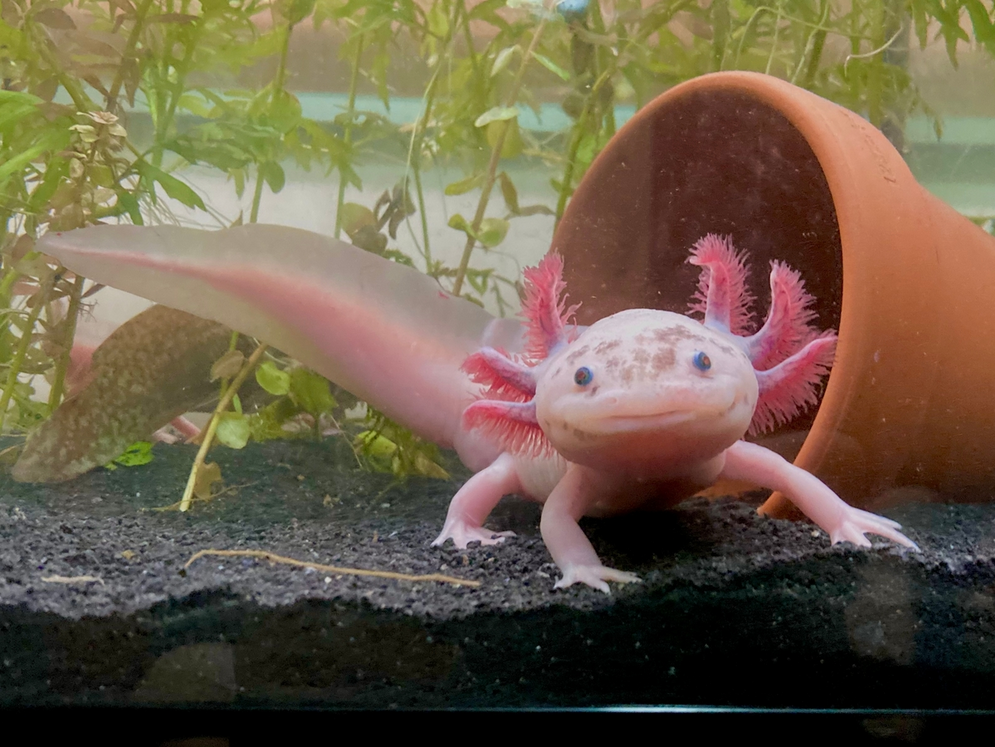

Velkmen til test sideen
Axolotl er en amfibieart i familien moldvarpsalamandere i ordenen haleamfibier. I vill tilstand lever den i restene av noen innsjøer som er i ferd med å forsvinne på grunn av veksten av Mexico City. De fleste axolotler finnes i dag som laboratorie- eller hobbydyr.
